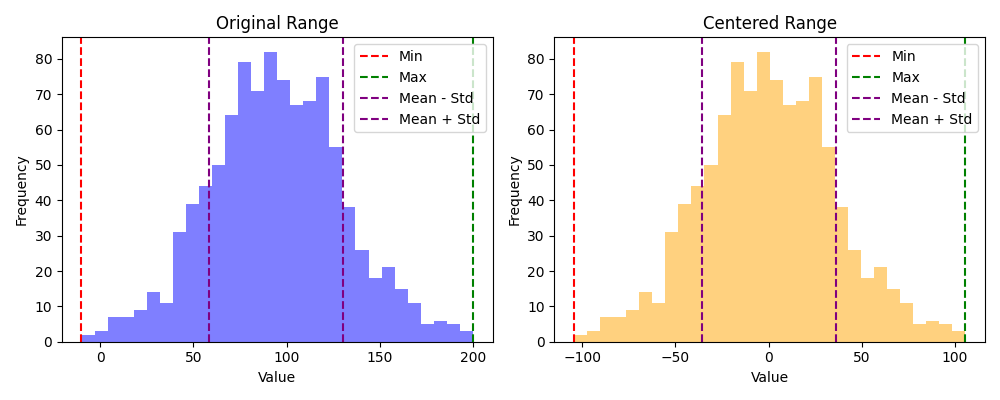
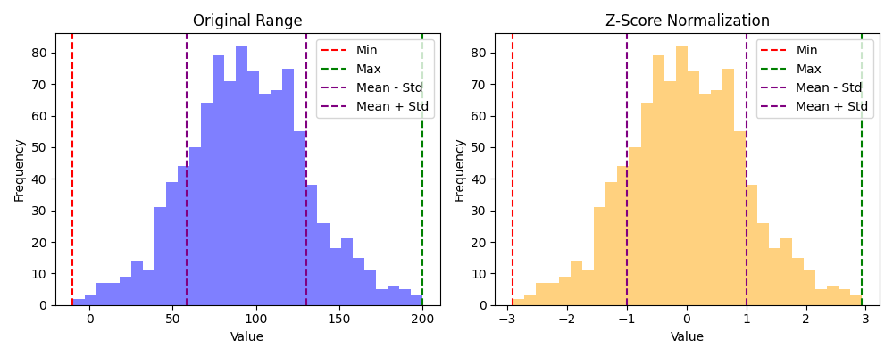

Skaalaus
Skaalan suhteen herkät algoritmit
Osa koneoppimisalgoritmeista ovat herkkiä skaalaukselle. Tämä tarkoittaa, että algoritmin suorituskyky voi rampautua, mikäli eri piirteiden välillä on suuria eroja. Esimerkiksi huoneiden lukumäärä on yleensä pieni luku, kun taas asunnon hinta dollareita on valtava lukema.
Jos mallin virhe perustuu etäisyyteen, skaalaus on tärkeää. Esimerkiksi K-means-algoritmi käyttää etäisyyttä klustereiden muodostamiseen. Jos yksi piirre on suurempi kuin toinen, se vaikuttaa enemmän etäisyyteen. Huomaa, että skaalauksen tarkka muoto vaihtelee. Kenties piirre puristetaan välille [0,1], tai kenties se skaalataan siten, että keskihajonta mahtuu alueelle [-1,1]. Näihin tutustutaan alla tarkemmin, mutta tarkistathan aina että valitsemasi datan esikäsittelijä on se, mitä mallisi tarvitsee. Esimerkiksi neuroverkot käyttävät usein Min-Max skaalausta, joka puristaa datan välille [0,1].
Tip
Tämän kurssin puitteissa riittää seuraava karkea listaus, jossa  tarkoittaa, että skaalaus on suositeltavaa ja
tarkoittaa, että skaalaus on suositeltavaa ja  tarkoittaa, että skaalaus ei ole tarpeellista.
tarkoittaa, että skaalaus ei ole tarpeellista.
- Puut
- Naive Bayes
- Muut
Skaalauksen apuvälineet
Dataa voi kuvata tilastotieteen avulla. Kuvailevia lukuja ovat keskiarvo, mediaani, moodi, varianssi, keskihajonta ja kvartiilit. Datan skaalauksessa tarvitaan tyypillisesti keskiarvoa, varianssia ja keskihajontaa. Nämä lienevät jo matematiikasta tuttuja, mutta käydään ne läpi kertauksen vuoksi. Kukin näistä esitellään ensin matemaattisessa muodossa ja sen jälkeen Python-koodina. Näitä tarvitaan myöhemmin skaalausta tehdessä.
Tämä materiaali pohjautuu osin BMC Genomics-sivuston kaavoihin.
Keskiarvo (mean)
Keskiarvo on kaikkien otannan (engl. sample) lukujen summa jaettuna lukumäärällä. Huomaa, että koko populaation keskiarvoa merkataan \(\mu\):lla (lausutaan myy); \(\overline{x}\) on nimenomaan otannan keskiarvo. Jatkossa, kun näet x̄-symbolin tässä dokumentissa, se tarkoittaa keskiarvoa.
from ml.vector import Vector
x = Vector(-1, 0, 1, 2, 3, 4, 5)
def mean(x: Vector):
return sum(x) / len(x)
Varianssi
Varianssi kertoo, kuinka paljon data poikkea keskiarvosta. Luku on nostettu neliöön, jotta negatiiviset poikkeamat eivät kumoaisi positiivisia, ja jotta suuret poikkeamat painottuisivat enemmän.
Miksi - 1?
Jakajassa oleva N - 1 vähentää populaatiosta yhden asteen vapautta. Tämä yhden vapausaste (engl. degrees of freedom) on käytössä otannan (engl. sample) varianssia laskettaessa. Mikäli N edustaa koko populaatiota, sitä ei käytetä. Huomaa, että koska jakaja on pienempi, varianssi on suurempi kuin jos jakajana olisi N. Koko populaation varianssin oletetaan siis olevan suurempi kuin otannan varianssin.
Jos skaalaat X:ää, ddof=0 on oikea arvo. Jos skaalaat X_train-dataa, ddof=1 on oikea arvo.
Keskihajonta
Keskihajonta on varianssin neliöjuuri. Se palauttaa neliöön nostetun varianssin takaisin alkuperäiseen mittayksikköön. Esimerkissä oletetaan, että käsittelemme otantaa, joten hyväksymme aiemman toteutuksen ddof=1 default-arvon.
Piirteiden skaalaus
Piirteiden skaalaus on menetelmä, jolla yhtenäistetään eri muuttujien tai piirteiden alue. Tietojenkäsittelyssä sitä kutsutaan myös datan normalisoinniksi ja se suoritetaan yleensä datan esikäsittelyvaiheessa. Se ottaa datataulukon ja palauttaa uuden taulukon samalla muodolla, mutta skaalattuna valitun menetelmän mukaiselle alueelle. Alla on esiteltynä muutama yleinen skaalaukseen liittyvä menetelmä.
Keskitys (centering)
Keskitys ei varsinaisesti skaalaa mitään, mutta se on tärkeä osa alla esiteltyjä skaalauksia. Keskityksessä lukujen keskiarvo vähennetään jokaisesta arvosta. Toisin sanoen keskiarvo siirretään nollaan. Mikäli muuttuja noudattaa normaalijakaumaa, puolet arvoista on positiivisia ja puolet negatiivisia.

Kuvio 1: Vasemmassa histogrammissa näkyy alkuperäinen data, joka noudattaa suunnilleen normaalijakaumaa. Oikeassa histogrammissa näkyy keskitetty data, jossa keskiarvo on 0.
Z-score
BMC's taulukossa tätä kutsutaan autoskaalaukseksi (engl. autoscaling). Tämä on yleisin skaalausmenetelmä. Keskitettu data jaetaan keskihajonnalla, mistä lopputuloksena listan lukujen keskiarvo on 0 ja keskihajonta 1. Z-pisteytyksestä käytetään usein termiä standardisointi (engl. standardization).

Kuvio 2: Vasemmassa histogrammissa on sama data kuin Kuviossa 1. Oikeassa histogrammissa näkyy Z-pisteytetty data, jossa keskiarvo on 0 ja keskihajonta on 1.
Tip
Tulet törmäämään tähän usein eri koneoppimisesimerkeissä. Mikäli näet jossakin esimerkissä käytössä StandardScaler-esikäsittelijän, se on juurikin tämä.
Min-max skaalaus
Min-max skaalauksessa data skaalataan välille [0,1]. Tämä on meidän kurssin kontekstissa eli perinteisessä koneoppimisessa hieman Z-scorea eli standardiskaalausta harvinaisempi, mutta se on hyödyllinen esimerkiksi neuroverkkojen kanssa. Min-max skaalauksesta käytetään usein myös nimitystä normalisointi.